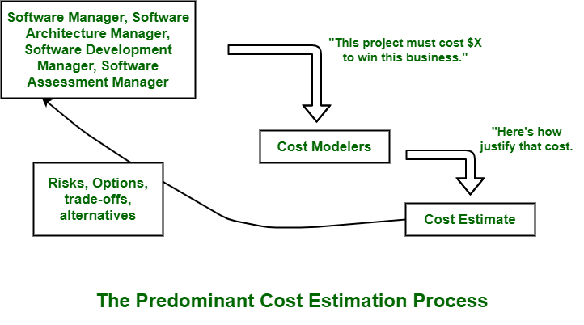

3.5 Project Size Estimation Techniques
Project size estimation is the process of predicting how large a software project is before development begins, so that the manager can derive effort, duration, cost, and team size. Estimation is one of the most critical and most difficult activities in SPM because errors at this stage propagate through the entire project plan. The two quantities most commonly estimated are time and cost of development.
Estimation techniques fall into four broad categories. The choice depends on how much is known about the project, how large it is, and how much accuracy is required.

Predominant cost estimation process
In many real projects, estimation does not start from a blank technical analysis. Instead, it follows a top-down flow driven by business constraints:
- Management sets a target: Senior managers may state that the project must cost a fixed amount to win the business or fit the available budget.
- Cost modelers justify the figure: Estimators or cost models (such as COCOMO) are then used to show how the project can be delivered within that target cost.
- Risks and trade-offs emerge: Fitting the project into a pre-set budget often forces choices about scope, quality, staffing, or technology — these are documented as risks, options, and alternatives.
- Feedback to management: The identified risks and trade-offs are reported back to management so informed decisions can be made before committing to the plan.
This top-down approach is common in competitive bidding but can be dangerous if the target cost is unrealistic. Bottom-up and decomposition techniques (below) provide a more independent technical estimate to compare against any business-imposed figure.
Four types of estimation
1. Post (delayed) estimation
When the client is friendly, the technology is well known, and the relationship is informal, the team may choose not to estimate time or cost formally because support is expected in every situation. This approach is rare in professional or contract work but can occur in internal or research projects with flexible funding.
2. Base (experience-based) estimation
In base estimation, the manager predicts the cost and duration of the entire project based on experience gained from similar past projects. This is quick and inexpensive but accurate only when the new project closely resembles previous ones in size, technology, and team capability.
3. Decomposition-based estimation
For large projects, the problem is broken into smaller sub-problems and each part is estimated separately. Two approaches are used within decomposition:
- Direct estimation (white box): Size is measured using size-oriented metrics such as KLOC (thousands of lines of code). Effort is then derived from productivity figures.
- Indirect estimation (black box): Size is measured using function-oriented metrics such as Function Points (FP), which count inputs, outputs, inquiries, files, and interfaces rather than lines of code.
Decomposition estimates are summed to produce the total project estimate. This is more accurate than a single top-down guess for large systems.
4. Empirical model estimation
Empirical models use mathematically derived formulas based on historical project data. Different authors propose different equations using either LOC or FP as the size input. The most widely accepted empirical model is COCOMO (§3.6). Other examples include the Walston-Felix, Bailey-Basili, and simple Boehm models.
Key estimation relationships
Regardless of technique, the following relationships connect size, effort, duration, cost, and team size:
| Relationship | Formula |
|---|---|
| Effort from size and productivity | Effort = Size ÷ Productivity |
| Productivity | Productivity = Size ÷ Effort |
| Cost | Cost = Effort × Pay rate |
| Duration from effort and team | Duration = Effort ÷ Team Size |
| Team size from effort and duration | Team Size = Effort ÷ Duration |
| Effort from duration and team | Effort = Duration × Team Size |
These formulas are exam favourites. For example, if a module requires 5,400 LOC and team productivity is 300 LOC per person-month, the effort for that module is 5,400 ÷ 300 = 18 person-months.
Choosing an estimation technique
Early in a project when requirements are vague, base or top-down estimation may be the only option. As the design matures, decomposition and empirical models provide better accuracy. No single technique is perfect; experienced managers often use multiple methods and compare results to produce a range rather than a single point estimate.
Q: What are the four types of software project estimation? Explain decomposition-based estimation and write the key estimation formulas.
Model answer points:
- Four types: post/delayed, base/experience-based, decomposition-based, empirical model.
- Post estimation: no formal estimate when client and technology are well known.
- Base estimation: predict from similar past projects.
- Decomposition: break into sub-problems; direct (KLOC/white box) vs indirect (FP/black box).
- Empirical: mathematical formulas from historical data — COCOMO is the main example.
- Write formulas: Effort = Size/Productivity; Duration = Effort/Team Size; Cost = Effort × Pay.